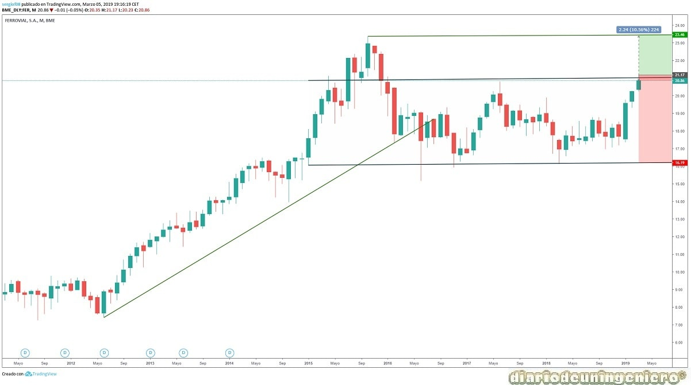
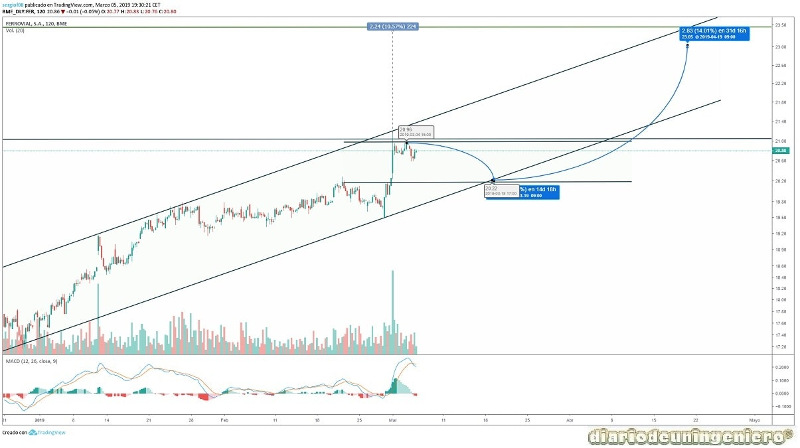

Ferrovial tiene su origen en 1952 cuando Rafael del Pino empezó a gestionar trabajos para renovar las vías de Renfe. De ahí viene su nombre, aunque ya no se dedica precisamente al sector ferroviario. Rafael del Pino es descendiente de unos de los grandes de España, Fernando I de León y Castilla y su familia siempre ha estado ligado a los que han mandando en España, teniendo diferentes títulos nobiliarios. Sus descendientes, que son los que controlan hoy en día Ferrovial, tienen también influencia en otras empresas del selectivo donde forman parte del accionariado.
En los años cincuenta seguiría en el sector del tren pero ya empezó a internacionalizarse la empresa con el primer proyecto fuera de España, concretamente en Venezuela.
En los 60 se expandiría al sector de las carreteras, comenzando con la primera autopista de peaje de España. En los 70 seguiría con las comunicaciones tanto de tren como de carretera y sobre todo en el norte de España. En los 80 diversificaría sus proyectos entrando también en las infraestructuras industriales mediante la adquisición de Cadagua. En los 90 adquiriría la constructora Agroman, y en muchos de los proyectos llevarían su nombre, siendo Ferrovial Agroman. En 1999 entraría en bolsa. Más tarde conseguiría también Budimex, aumentando el peso de la construcción en su estructura.
A partir del año 2000 empezaría el boom de la empresa con grandes proyectos tanto fuera como dentro de España. Entraría en el sector aeronáutico con la compra del operador aeroportuario y pasaría a gestionar siete aeropuertos, estando ya presente en todos los medios de transporte. En 2010 debido al impacto de la crisis necesitaría desinvertir en muchos sectores y concretamente en aquellos más caros como los aeropuertos. Acabando casi por completo la actividad en este sector. Es a partir de 2005 que empezaría muchos proyectos en Reino Unido donde tenía ya los aeropuertos y donde empezó a tener muchos beneficios cuando empezaría a lucir internacionalmente. Es por ello que tras las desinversiones volvería a apostar con la construcción de numerosos proyectos, en metro, carreteras, túneles o aeropuertos. A partir de 2015 comenzaría a realizar más proyectos en Norteamérica, Canadá y Estados Unidos.
A continuación presento los datos de fundamentales que me parecen más importantes:
| ### | 2015 | 2016 | 2017 | 2018 | 2019 |
|---|---|---|---|---|---|
| Deuda/ Caja empresa | Deuda Total (M) | - | 10.759 | 12.208 | 5.737 | 12.616 |
| Beneficio/valor acción | |||||
| Capitalización(M) | 15.270 | 12.449 | 13.858 | 13.066 | 15.404 |
| EBDITA (M) | - | 944 | 932 | 587 | 897 |
| PER | - | 40,8 | 33,5 | 33,5 | 36,44 |
| Beneficio Neto (M) | - | 376 | 454 | -448 | 418 |
| Dividendo | - | 0,74 | 0,72 | 0,72 | 0,74 |
| Rentabilidad por acción (%) | 4,5 | 4 | 4,1 | 3,5 | |
| Deuda/EBDITA | - | 11,4 | 13,1 | 9,8 | 14 |
De la tabla de fundamentales observamos como en 2017 fue un mal año para Ferrovial teniendo beneficios negativos circunstanciales que se verían reflejados en la acción al no escalar posiciones ya que lleva 3 años en lateral. Actualmente sigue con la senda que llevaba, y es que los aeropuertos en Reino Unido le salieron caros a Ferrovial, aunque poco a poco se ha ido desprendiendo de aquellos que salían menos rentables mantenerlos.
La capitalización ha superado ya los números de 2016 y va a intentar probar resistencias importantes. A diferencia de otras constructoras españolas Ferrovial sufrió mucho tras la crisis por haber apostado demasiado fuerte en sectores con bastante riesgo y el mercado es sabio y acaba poniendo en valor todo.
Si nos fijamos en el gráfico de largo plazo observamos como esta a punto de tocar la resistencia del canal lateral en la que lleva inmerso el valor desde 2016. A partir de ahí a máximos solo le quedaría un 10%. Esto hace que actualmente presente un riesgo considerable seguir dentro y creo que retrocederá. No para buscar soporte si no para ir al nivel anterior a esta subida como veremos a continuación.

En corto plazo con el gráfico a 6 meses se puede observar como en MACD las líneas se han cruzado y va a empezar a corregir. Este pequeño canal alcista que lleva realizando desde principios de año nos indica el próximo soporte en torno a los 19,8€. En caso de perderlo por el contexto de incertidumbre actual entorno a las elecciones podría visitar fácilmente los 17€, ya que una visita al soporte del canal de largo lo veo bastante improbable.

© 2016 - All Rights Reserved - Diseñada por Sergio López Martínez
![[Valid RSS]](https://www.feedvalidator.org/images/valid-rss-rogers.png "Validate my RSS feed")